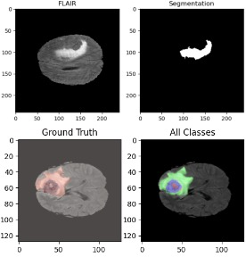

Selected Projects
End-to-end projects: research and deployed prototypes



Brain Tumor Segmentation
W-Net and deep neural networks for medical image segmentation.
Meal Nutrition Analysis
Multimodal CNN+LSTM approach for nutrition estimation.
Vision Transfer Learning
DeiT-based image classification with augmentation and fine-tuning.
Face Tracking Robot
3-wheeled robot with pan-tilt mechanism and vision-based tracking.
Cartpole using Q-learning
Reinforcement learning implementation for cartpole control.
Health Monitoring & Heart Stroke Prediction
IoT-based health monitoring system with ML prediction.